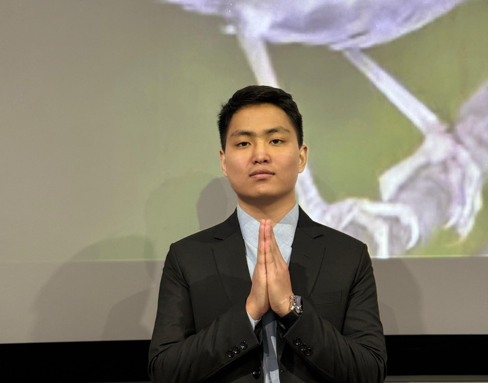
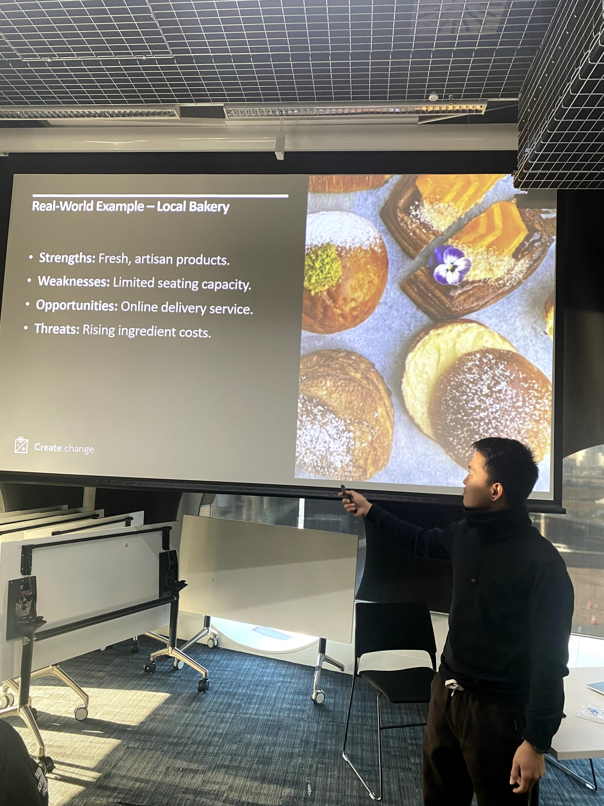
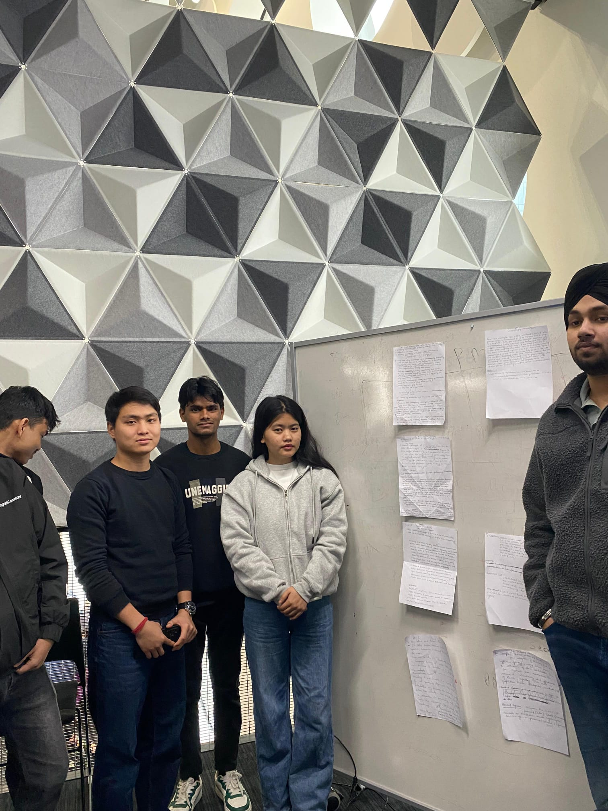
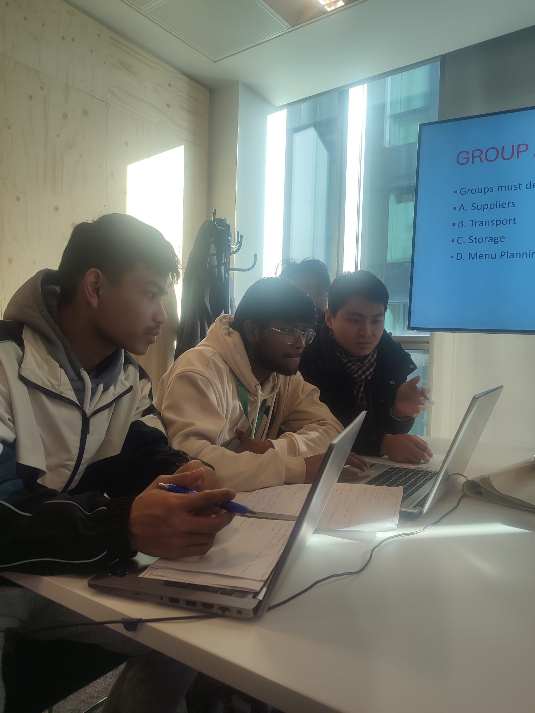
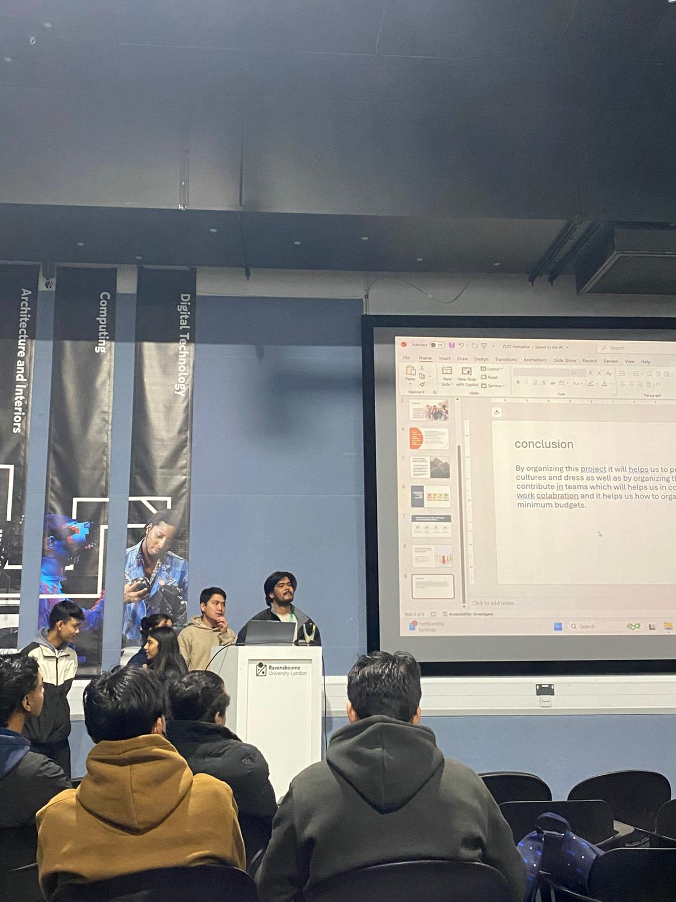
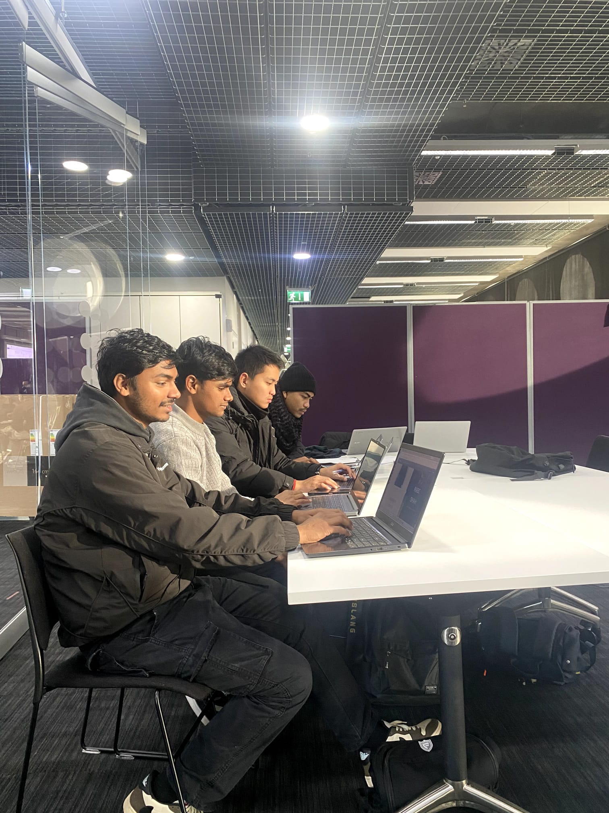
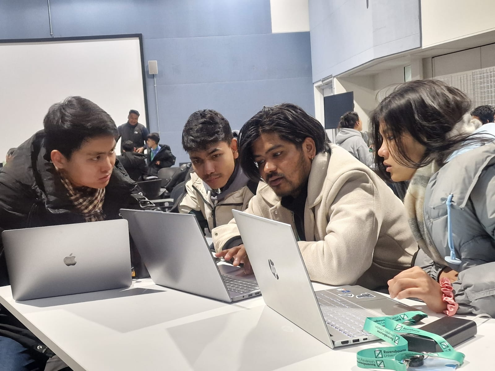
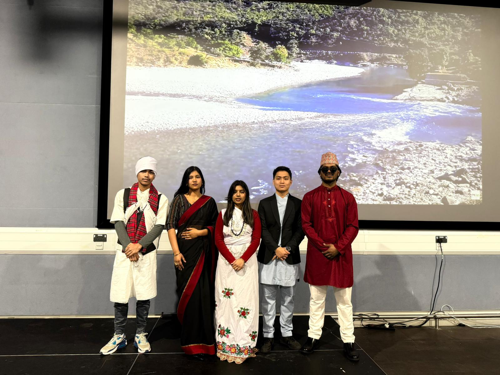

Business Management Student
Designing Business
Strategies.
I am a Business Management student at Ravensbourne University London with a growing interest in project management, teamwork, and professional development.
14
Professional
Case Studies
04
Core
Business Pillars

The Portfolio Grid
A structured visual journey through my academic evidence and professional competencies.

Comprehensive SWOT Analysis
Detailed strategic auditing of business environments, identifying strengths, weaknesses, opportunities, and threats for creative enterprises.
Professional Etiquette
Demonstrating core professional values and cultural intelligence in business settings.

Collaborative Ideation
Leading group brainstorming sessions to generate innovative solutions for project challenges.

Project Visualisation
Utilizing advanced digital tools to create clear, persuasive project plans and presentations.

Executive Presentation
Delivering high-stakes project conclusions at the podium with confidence and clarity.

Cross-Functional Sync
Coordinating efforts across diverse team members to ensure unified project direction.

Active Listening
Fostering inclusive environments through productive peer-to-peer feedback sessions.

Community Engagement
Participating in and leading cultural initiatives to build professional networks.
Professional Reflection.
My journey throughout the Business Management program at Ravensbourne University London has been a transformative experience.
My journey through the Business Management program at Ravensbourne University London has been a profound period of professional and personal growth. Over the course of my studies, I have moved beyond the abstract concepts of corporate theory to engage with the practical complexities of the modern business landscape. This experience has not only sharpened my academic acumen but has also instilled in me a deep appreciation for the nuances of strategic execution and organizational culture.
One of the most significant realizations I’ve had is that successful business management is less about rigid hierarchies and more about the fluid dynamics of collaboration and empathy. Through various intensive modules and high-stakes group projects, I have learned that effective leadership is rooted in active listening. By fostering an environment where every voice is heard, I have been able to navigate complex team dynamics and lead diverse groups toward a unified vision. This collaborative approach has been instrumental in my development as a project manager, allowing me to synthesize different perspectives into cohesive strategies.
Furthermore, my engagement with digital visualization and strategic auditing, such as comprehensive SWOT analyses, has equipped me with a robust toolkit for evidence-based decision-making. I have learned to leverage data and digital tools to communicate complex ideas with clarity and impact. Looking ahead, I am eager to apply this multi-faceted skill set to real-world challenges. My goal is to contribute to innovative projects that don't just follow industry trends but actively challenge the status quo, driving sustainable and ethical growth in the global market. Every case study and presentation has prepared me for the next step in my professional evolution.
BA (Hons) Business
Management
Developing core competencies in strategic thinking and operational efficiency at Ravensbourne University London.
2026
EXPECTED GRADUATION